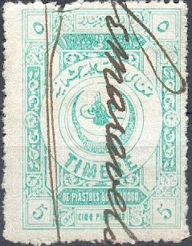
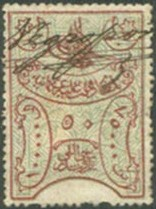
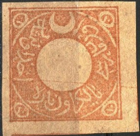
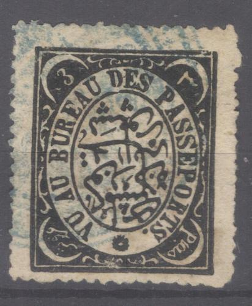

(Reduced size)
Note: on my website many of the
pictures can not be seen! They are of course present in the
catalogue;
contact me if you want to purchase it.
With inscription 'TIMBRE', various frames:

(Reduced size)
In 1890 were issued: 10 pa grey, 10 pa olive on
yellow, 10 pa brown, 20 pa grey, 20 pa brown on yellow, 1 Pi
grey, 1 Pi brown, 2 Pi orange, 2 Pi brown, 3 Pi brown, 3 Pi
olive, 4 Pi brown (2 shades were issued), 5 Pi brown, 5 Pi olive,
7 1/2 Pi brown, 7 1/2 Pi orange, 7 1/2 Pi olive, 10 Pi brown, 10
Pi olive, 12 1/2 Pi blue, 15 Pi blue, 17 1/2 Pi blue, 20 Pi blue,
22 1/2 Pi blue, 25 Pi blue 27 1/2 Pi blue, 30 Pi blue, 32 1/2 Pi
blue, 35 Pi blue 37 1/2 Pi blue, 40 Pi blue, 42 1/2 Pi blue, 45
Pi blue, 47 1/2 Pi blue, 50 Pi blue, 55 Pi red, 60 Pi red, 65 Pi
red 70 Pi red, 75 Pi red, 80 Pi red, 85 Pi red, 90 Pi red, 95 Pi
red, 100 Pi red, 150 Pi violet, 200 Pi violet, 250 Pi violet, 300
Pi violet, 350 Pi violet, 400 Pi violet, 450 Pi violet and 500 Pi
violet.
In 1900-1912 several other values were issued (with two different
'Toughra' designs; the central design): 5 pa red, 10 pa red, 10
pa red and yellow, 20 pa red, 20 pa green and yellow, 1 Pi
violet, 1 Pi violet and yellow, 2 Pi green, 2 Pi green and
yellow, 3 Pi green, 3 Pi green and yellow, 4 Pi green, 4 Pi green
and yellow, 5 Pi green, 5 Pi green and yellow, 7 1/2 Pi green, 7
1/2 Pi green and yellow, 10 Pi green, 10 Pi green and yellow, 12
1/2 Pi violet, 15 Pi violet, 17 1/2 Pi violet, 20 Pi violet, 22
1/2 Pi violet, 25 Pi violet, 27 1/2 Pi violet, 30 Pi violet, 32
1/2 Pi violet, 35 Pi violet, 40 Pi violet, 42 1/2 Pi violet, 45
Pi violet, 47 1/2 Pi violet, 50 Pi violet, 55 Pi yellow, 60 Pi
yellow, 65 Pi yellow, 70 Pi yellow, 75 Pi yellow, 80 Pi yellow,
85 Pi yellow, 90 Pi yellow, 95 Pi yellow, 100 Pi yellow, 150 Pi
brown, 200 Pi brown, 250 Pi brown, 300 Pi brown, 350 Pi brown,
400 Pi brown, 450 Pi brown and 500 Pi brown.
(1891 issue, 10 pa black on orange, a 20 pa black also exists).
(Stamp issued in 1904, 20 pa black on red, a 10 pa black on red
also exists)
(Only a 2 Pi blue was issued in this design in 1888)
(1890 Emigration issue)
In the above Emigration design were issued: 20 pa brown, 1 Pi orange, 3 Pi green, 5 Pi green, 10 Pi blue, 20 Pi violet, 50 Pi red and 100 Pi red.
In the above two designs were issued from 1891 to 1913: 5 pa brown (smaller), 10 pa brown, 10 pa red, 10 pa red and yellow, 20 pa brown, 20 pa green, 20 pa green and yellow, 1 Pi brown, 1 Pi violet, 1 Pi violet and yellow, 2 Pi green, 2 Pi red, 2 Pi red and yellow, 3 Pi brown, 3 Pi green, 3 Pi green and yellow, 5 Pi green, 10 Pi green, 10 Pi yellow, 10 Pi brown and yellow, 20 Pi violet, 25 Pi red, 50 Pi brown, 100 Pi green, 200 and Pi yellow. Of some values the 'Tughra' design exists in two types.

1891 design used for posters and newspapers
(1909 'DROIT FIXE', only a 2 Pi red was issued, reduced size)
(1883 design, reduced size)
In the above 1883 design the following values were issued: 1 Pi, 2 Pi, 3 Pi, 5 Pi, 10 Pi, 20 Pi, 30 Pi, 50 Pi, 100 Pi and 200 Pi (all in blue).

Many values were issued in the above design, ranging from 10 pa to 1000 Pi (of each value two different colours exist).
(1890 large sized issue, reduced size)
In the above 1890 design were issued: 10 pa brown, 10 pa lilac, 1 Pi black, 1 Pi red, 5 Pi blue, 5 Pi green, 20 Pi violet, 20 Pi brown, 50 Pi yellow, 50 Pi blue, 100 Pi green, 100 Pi grey, 500 Pi red and 500 Pi blue. Several values exist with two different 'Toughra' designs. Some values seem to exist with an overprint (I have never seen them personally).
(Reduced size)
In the above design were issued from 1888 onwards: 5 Pi black and red, 5 Pi orange, 5 Pi black and red, 20 Pi black and red, 20 Pi black and green, 20 Pi black and blue, 50 Pi black and red, 50 Pi black and yellow and 50 Pi black on orange.
(Reduced size)
In the above design were issued in 1890: 10 pa, 1 Pi, 5 Pi, 20 Pi, 50 Pi, 500 Pi and 1000 Pi (all in the colour black and yellow). In 1895 the values 10 pa black and grey, 1 Pi black and brown, 5 Pi black and blue, 50 Pi black and lilac, 100 Pi black and green, 500 Pi black and red, 1000 Pi black and red and 5000 Pi black and yellow were issued.
Other fiscal stamps:
(Religious tribunal stamp)
In the above 'Religious tribunal' design at least the following values exist: 1 Pi green, 5 Pi blue, 50 Pi green, 100 Pi brown, 500 Pi orange and 1000 Pi brown. Overprinted stamps were issued for the government in Ankara as postage stamps in 1920.

(Importation of wood, 1880)

1891 Passport fee fiscal stamp; only the value 20 pa black on red
was issued in this design.

Theater tax

Cigarette tax
Fiscal stamp of Turkey with Greec overprint


Turkish fiscal stamps with 'OCCUPAZIONE ITALIANA' (Italian
occupation) printed on it in three languages. Possibly issued for
some occupied islands in the Mediterrenean sea.

Passport tax; 1874 3 pi black, with French inscription "VU
AU BUREAU DES PASSEPORTS".
Literature:
1) 'Revenues of Ottoman Empire and Republic of.Turkey' by William T.McDonald 1998 (second edition), 240 pages.
2) "POSTADA KULLANILMIS OSMANLI, DUYUNU UMUMIYE PULLARI-, Ottoman Empire Duyunu Umumiye stamps. The fiscal stamps used as/in postoffices by Ismail Hakki Okday, ISTANBUL, 30 pages., in Turkish"
{kind=link}
{kind=link}